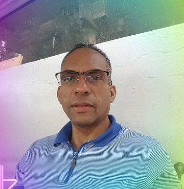

I am a skilled and bilingual freelance and enthusiastic web developer with over 2 years of experience in creating graphic content for showcasing events and products on the website of the company I work for. I am responsible for keeping up-to-date and maintaining the store website with events, deals, and products.
As part of my enthusiasm for coding, I set up an online retail store www.forellebeauty.com by using an OpenCart template which I managed and ran for about 2 years.
I am proficient in Photoshop, HTML, CSS, JavaScript, and HTML email design derived from my practice and several training courses that I have completed on online learning platforms. I also have intermediate skill level in PHP, MySQL, and Python as well as in frameworks Bootstrap, jQuery, and WordPress.
My best professional assets are adaptability and responsiveness, service-focused, client-oriented, communicate effectively, attention to detail, speak both languages English and Spanish, innovative, self-taught and self-driven person.